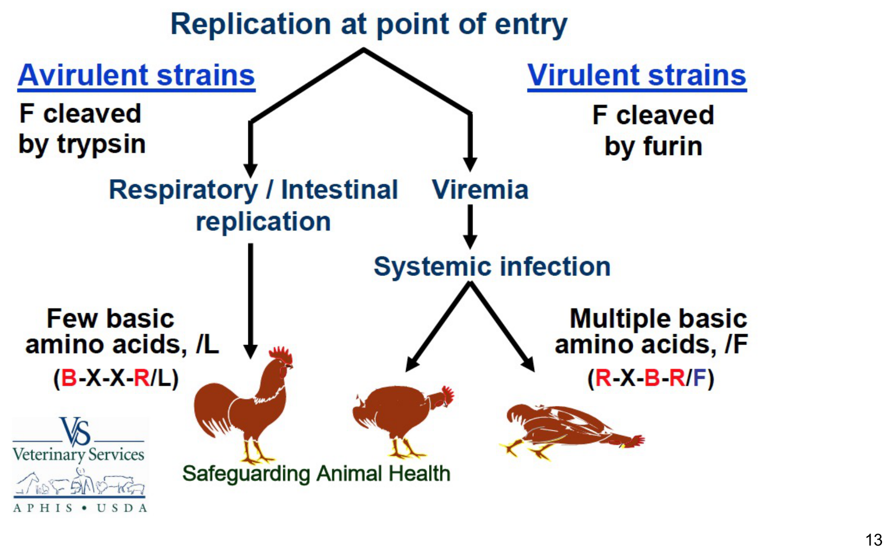

大方向與重點摘要
- 這是什麼病
- 由第一型禽類副黏液病毒（APMV-1）引起的高傳染性惡性傳染病，可感染雞與其他 250 種以上鳥類。同一種病毒依毒株不同，可以從「做成疫苗用的弱毒」到「死亡率近 100% 的強毒」，症狀遍及呼吸、消化、生殖、神經系統。
- 為什麼重要
- 台灣的甲類動物傳染病、WOAH（舊稱 OIE）法定通報傳染病。台灣自 1940 年起反覆流行，曾有三次大流行；目前靠弱毒疫苗控制，幾乎每一隻商用雞都會接種。
- 這章要抓的重點
-
- 毒力由 F 蛋白切位決定：多個鹼性胺基酸 → 全身蛋白酶都能切 → 強毒；只能被 trypsin 切 → 侷限呼吸消化道 → 弱毒。這是整章的骨幹，也解釋了為什麼弱毒疫苗安全。
- 「新城病」的法定定義：ICPI ≥ 0.7，或 F 蛋白 113–116 位有 ≥ 3 個鹼性胺基酸且 117 位為苯丙胺酸。
- 三種病原性試驗的判讀：MDT、ICPI、IVPI 的數值與強中弱毒的對應。
- 內臟強毒型 vs. 神經強毒型的症狀、病變與死亡率。
- 疫苗：單一血清型 → 弱毒疫苗（B1、La Sota）能保護所有病原型；點眼最好；依風險選接種計畫。
- 最容易混淆
- 高病原性禽流感（HPAI）：同樣是必須通報的急性高死亡率疾病，腺胃出血在肉眼上無法和新城病區分，要靠病毒分離與鑑定。呼吸道症狀與產蛋下降則要和傳染性支氣管炎、傳染性喉頭氣管炎區分。
- 考試可能怎麼問
（推測） - 機轉題（F 蛋白切位與 trypsin 的關係）、數字題（ICPI 0.7、1.5，MDT 60／90 小時，IVPI 0–3）、病原型比較題（vvND vs. nvND）、鑑別診斷題（與禽流感）、疫苗題（疫苗株、點眼的優點、高風險區用活毒＋死毒）。
內容以老師講義為主體。標示「補充」的段落（含「讀書補充Note」）是講義以外的延伸；標示「推測」的是依講義強調處推測的出題方向，不是考古題。考試範圍以老師上課為準。圖片為老師講義截圖。
- 分類：副黏液病毒科（Paramyxoviridae）、Avulavirus 屬；(–) ssRNA 約 15 kb、有封套；HN 負責辨識受體與凝集紅血球，F 負責膜融合。
- 1 個血清型、5 個病原型：內臟強毒型（vvND，亞洲型）、神經強毒型（nvND，美洲型）、中間毒型、弱毒型、無病原性型；也可簡化成強、中、弱三型。
- 毒力機轉：F0 必須被切成 F1、F2 才能融合。強毒株切位有多個鹼性胺基酸，全身的蛋白酶都能切 → 全身感染；弱毒株只能被 trypsin 切，trypsin 只在呼吸道與消化道上皮 → 只在這兩處增殖。所以培養弱毒株要加 trypsin。
- 法定定義：ICPI ≥ 0.7，或 113–116 位有 ≥ 3 個精胺酸／離胺酸、且 117 位為苯丙胺酸（F）。講義另寫 ICPI ≥ 1.5 為強毒型。
- 症狀：潛伏期 5–6 天；沉鬱、呼吸困難、顏面水腫、綠色下痢，5–7 天死亡。內臟型極急性可無症狀猝死；神經型先呼吸道症狀，1–2 天後扭頸。
- 病變與鑑別：腺胃乳突部與移行部出血、腸道淋巴組織潰瘍出血壞死；禽流感也會造成腺胃出血，要鑑別。免疫過的雞可能只有神經症狀、沒有肉眼病變，要靠病毒分離。
- 疫苗：弱毒株 B1、La Sota、clone 30；點眼最好（逐隻、漏失率低、劑量一致）；常與傳染性支氣管炎疫苗做成混合疫苗；HI 抗體力價與保護力正相關。
- 人畜共通：偶爾感染實驗室人員、屠宰場員工、疫苗施用者，多為 3–4 天結膜炎，1–2 週痊癒。
病原學與病原型 Virology & Pathotype
先記住「一個血清型、五個病原型」：抗原上只有一種，所以疫苗能全面保護；毒力上差很多，所以臨床表現差很多。
病毒分類與特性必考
| 項目 | 內容 |
|---|---|
| 科／屬 | 副黏液病毒科（Paramyxoviridae）／Avulavirus 屬 |
| 基因體 | 負義單股 RNA（(–) ssRNA），約 15 kb |
| 顆粒 | 150–300 nm，具封套 |
| 特徵構造 | 病毒破裂後釋出鞭炮或魚骨狀的核蛋白（nucleocapsid） |
| HN 蛋白 | 辨識細胞受體、凝集紅血球（所以能用血球凝集試驗 HA 偵測病毒、用 HI 測抗體） |
| F 蛋白 | 與細胞膜融合；決定毒力（見下一節） |
※ 講義 p.4 的親緣樹顯示：新城病病毒和其他禽類副黏液病毒同在 Avulavirus 屬；同科的 Morbillivirus 屬包含犬瘟熱病毒與麻疹病毒，禽間質肺炎病毒則在另一個科（Pneumoviridae）。
病原型分類必考
| 病原型 | 又稱 | 特徵 |
|---|---|---|
| ① 內臟強毒型 | 亞洲型，viscerotropic velogenic ND（vvND） | 主為腸管出血；死亡率通常達 100% |
| ② 神經強毒型 | 美洲型，neurotropic velogenic ND（nvND） | 主為呼吸及神經症狀；死亡率大雞 10–50%、小雞可達 90% |
| ③ 中間毒型 | Mesogenic | 只在小雞發病；可作為二次免疫的疫苗 |
| ④ 弱毒型 | Lentogenic | 供作疫苗（B1、La Sota） |
| ⑤ 無病原性型 | — | — |
※ 也有將 ①② 與 ④⑤ 各合併，共強、中、弱三種病原型。
禽類副黏液病毒與命名看過
目前至少有 20 種 APMV，新城病病毒是第 1 型。命名依序為：①血清型、②分離的鳥種、③分離地點、④參考編號或名稱、⑤分離年份。
F 蛋白切位與毒力 Pathogenesis必考
這一節是整章的骨幹：病原型分類、弱毒疫苗為什麼安全、法定定義、細胞培養為什麼要加 trypsin，全部從這裡推出來。
F 蛋白活化機轉
| 毒株 | F0 切位 | 能切開它的蛋白酶 | 結果 |
|---|---|---|---|
| 強毒株 | 有多個鹼性胺基酸 | 全身組織都有的蛋白酶（例如 furin） | 病毒血症 → 全身感染，各臟器病變而死亡 |
| 弱毒株 | 沒有多個鹼性胺基酸 | 只有胰蛋白酶（trypsin） | trypsin 只在呼吸道與消化道上皮 → 只在這兩處增殖 |
- 弱毒疫苗安全：弱毒株只能在呼吸消化道複製，不會擴散全身。
- 細胞培養要加 trypsin：培養弱毒株時細胞裡沒有能切 F0 的酶，要人工加 trypsin 才長得好。
- 可用序列判定毒力：看切位的胺基酸序列就知道是強毒還是弱毒，這就是法定定義 (b)。

切位的胺基酸序列
| 位置 | 113 | 114 | 115 | 116 | ｜ | 117 |
|---|---|---|---|---|---|---|
| 弱毒株（loNDV） | R/K | Q | G | R | ｜ | L（白胺酸） |
| 強毒株（vNDV） | R | Q | R/K | R | ｜ | F（苯丙胺酸） |
※ R＝精胺酸（arginine）、K＝離胺酸（lysine），都是鹼性胺基酸。強毒株在 113–116 有三個鹼性胺基酸，117 是 F；弱毒株的 115 是 G（甘胺酸），117 是 L。依講義 p.11 整理。
WOAH「新城病」的正式定義
禽類感染 APMV-1，病毒須符合以下任一項毒力標準，才定義為新城病：
- (a) 1 日齡雛雞的腦內接種病原性指數（Intracerebral Pathogenicity Index, ICPI）≥ 0.7；或
- (b) F2 蛋白 C 端有多個鹼性胺基酸（113–116 位之間至少 3 個精胺酸或離胺酸），且 F1 蛋白 N 端第 117 位為苯丙胺酸。
宿主、傳播與台灣流行史
宿主理解
雞、火雞、雉雞、珠雞、鵪鶉、鴿子都有感受性；台灣曾從雞、雉雞、火雞、珠雞、鵪鶉、鷓鴣、鴿子、領角鴞、鴨、鵝分離到病毒。鴨的感受性最低。台灣以 2–6 週齡肉雞最常發生。
傳播途徑理解
吸入帶病毒顆粒的乾粉塵。
病雞糞便含大量病毒。
被病毒汙染的飲水。
雞場器具、人員帶入。
—
弱毒株可垂直傳播；強毒株會讓胚胎死亡，無法孵化。
台灣流行史看過
1926 年首先在英國新城鎮（Newcastle upon Tyne）發現。台灣於 1940 年發現病例，之後不斷流行，曾有三次大流行：
| 期間 | 調查 | 發病 | 死亡 |
|---|---|---|---|
| 1968–1969 年 | 60 萬隻 | 15 萬隻 | 8 萬隻 |
| 1984–1985 年 | 460 萬隻 | 270 萬隻 | 56 萬隻 |
| 1994 年 12 月–1995 年 4 月 | 發病死亡 90 萬隻以上 | ||
目前新城病為台灣甲類動物傳染病、WOAH 法定通報傳染病。
臨床症狀與病變 Clinical Signs & Lesions
臨床症狀必考
潛伏期 5–6 天（也有 2 天到 15 天以上）。明顯精神沉鬱、呼吸困難、顏面水腫、綠色下痢便，5–7 天後死亡。
| 內臟強毒型（vvND，亞洲型） | 神經強毒型（nvND，美洲型） | |
|---|---|---|
| 主要表現 | 腸管出血；極急性者可能沒有症狀就死亡 | 呼吸困難、喘息、食慾消失、產蛋下降；1–2 天後出現扭頸等神經症狀 |
| 死亡率 | 通常達 100% | 10–90%（大雞 10–50%，小雞可達 90%） |
肉眼病變必考
- 氣管充出血。
- 內臟型主要在腸道：腺胃乳突部、移行部出血；十二指腸、空腸、迴腸、盲腸扁桃潰瘍出血壞死。
- 其他器官：心臟、肝臟、皮膚等出血點。
- 不能只看腺胃出血就診斷：消化道出血病變雖是新城病的特徵，但禽流感也會造成腺胃出血。
- 沒有病變不代表不是新城病：台灣有些病雞因為有抗體保護，內臟病變不明顯，只出現神經症狀而沒有肉眼病變，要靠病毒分離確定。
組織學病變理解
| 系統 | 病變 |
|---|---|
| 呼吸道 | 上呼吸道黏膜水腫、充血、炎症細胞浸潤；肺泡壁上皮細胞水腫、充出血 |
| 腸道 | 腸黏膜出血壞死性病灶 |
| 神經系統 | 非化膿性腦膜腦炎：神經元變性、上皮細胞增生、淋巴球圍管現象、膠質細胞浸潤 |
| 血管 | 血管內皮細胞壞死，各器官充出血 |
| 淋巴組織 | 脾臟、胸腺、華氏囊退行性變化 |
| 生殖系統 | 卵泡萎縮，卵巢與輸卵管炎症細胞浸潤 |
鑑別診斷 Differential Diagnosis必考
雞群出現呼吸道症狀、產蛋下降、死亡增加時，這四個病毒病一定要放在一起想。下表內容取自本課程四份講義。
| 新城病（ND） | 高病原性禽流感（HPAI） | 傳染性支氣管炎（IB） | 傳染性喉頭氣管炎（ILT） | |
|---|---|---|---|---|
| 病毒 | 副黏液病毒科，APMV-1；(–) ssRNA | 正黏液病毒科，A 型流感；8 段 (–) ssRNA | 冠狀病毒科；(+) ssRNA | 疱疹病毒科，GaHV-1；DNA |
| 台灣分級 | 甲類；WOAH 通報 | WOAH 通報；發生時撲殺 | 乙類 | — |
| 毒力決定 | F 蛋白切位的鹼性胺基酸 | HA 蛋白切位的鹼性胺基酸（同樣的邏輯） | 多種基因型、血清型、病原型 | — |
| 主要症狀 | 沉鬱、呼吸困難、顏面水腫、綠色下痢、扭頸 | 呼吸、腸炎、生殖、神經症狀；頭臉水腫、扭頸 | 氣管囉音、咳嗽、流鼻液、水便（多尿）、產蛋下降 | 急性呼吸困難、喘息、尖叫、咳血、產蛋下降 |
| 特徵病變 | 腺胃乳突部出血；腸道淋巴組織潰瘍出血壞死 | 雞冠腫大、眼眶水腫、足出血、內臟漿膜出血、腺胃出血；台灣 H5 株另有胰臟出血壞死 | 依型別：氣管、腎臟（尿酸鹽）、腺胃、輸卵管 | 病變侷限於呼吸道，核內包涵體 |
| 毒力試驗 | ICPI ≥ 0.7（WOAH） | IVPI > 1.2，或 8 隻 4–8 週齡雞靜脈接種後 10 天內死 6–8 隻（WOAH） | — | — |
| 特殊之處 | 單一血清型，弱毒疫苗可全面保護 | 低病原性株在水禽體內維持；高病原性株由低病原性株的 HA 切位突變而來 | 血清型多、交叉保護差 | 潛伏在三叉神經節，緊迫時再發、間歇排毒；單一血清型 |
禽流感講義寫：台灣的禽流感病毒株會造成腺胃乳突部出血，肉眼病變無法與新城病區分；造成的腎尿酸鹽沉積也無法與傳染性支氣管炎區分。兩者都是必須通報的疾病，現場懷疑時要採樣送驗，以病毒分離與鑑定確診。
實驗室診斷與病原性鑑定 Diagnosis
流程：採樣 → 病毒分離 → 序列分析 → 病原性鑑定。因為野外到處有疫苗株，從病雞分離到新城病病毒，一定要再鑑定毒力，才知道是強毒還是疫苗株。
採樣理解
- 死雞或瀕死雞：新鮮死雞或瀕死雞的臟器分離病毒較佳。取口、鼻拭子，以及肺、腎、腸（含腸內容物）、脾、腦、肝、心臟；可分開或混合，腸管通常分開放。
- 活雞：氣管與泄殖腔拭子，泄殖腔拭子一定要沾到糞便；小型脆弱的禽類可改收新鮮糞便。
- 保存：放入含抗生素的磷酸鹽緩衝液（PBS，pH 7.0–7.4），例如 penicillin 2,000 U/mL、streptomycin 2 mg/mL 或 gentamicin 50 μg/mL；糞便與泄殖腔拭子的抗生素濃度要提高 5 倍以上。製成 10–20% 乳劑，室溫放置 1–2 小時後盡快試驗；4°C 保存不超過 4 天。
病毒分離理解
- 乳劑以 1,000 g 離心 10 分鐘（≤ 25°C），上清液經 0.45 μm 濾膜過濾，接種 9–11 日齡 SPF 雞胚尿囊腔，每胚 0.2 mL，35–37°C 觀察 4–7 天。
- 死胚與未死胚放 4°C 降溫 10 小時以上，抽取尿囊液做血球凝集試驗（HA），偵測有沒有血球凝集素。陰性要再盲目繼代 2 次。
序列分析理解
用 RT-PCR 增幅 F 基因的切位區段，再做核酸定序、推算胺基酸序列：113–116 位有 3 個以上鹼性胺基酸，且 117 位為苯丙胺酸，即判定為新城病（法定定義 (b)）。
三種病原性試驗必考
| 試驗 | 做法 | 判讀 |
|---|---|---|
| 雞胚平均死亡時間 Mean Death Time（MDT） | 病毒液 10 倍連續稀釋（10⁻⁶–10⁻⁹），每個稀釋度接種 5 個 9–10 日齡 SPF 雞胚尿囊腔，37°C；剩餘病毒 4°C 保存，8 小時後再接 5 個。每天照蛋 2 次、連續 7 天。造成接種胚全部死亡的最高稀釋倍數為最小致死劑量，MDT 是最小致死劑量殺死胚胎的平均時間 | < 60 小時：強毒株 60–90 小時：中間毒株 > 90 小時：弱毒株 |
| 腦內接種病原性指數 ICPI | HA 力價 > 16 的新鮮病毒液 10 倍稀釋，取 0.05 mL 腦內接種 10 隻 1 日齡 SPF 小雞，每 24 小時觀察一次、連續 8 天。正常記 0、病雞記 1、死雞記 2 | ICPI＝8 天內每日每隻雞的平均分數（0–2） ≥ 1.5：強毒型；弱毒株接近 0 WOAH 定義：≥ 0.7 |
| 靜脈接種病原性指數 Intravenous Pathogenicity Index（IVPI） | 同樣的病毒液 10 倍稀釋，取 0.1 mL 靜脈接種 10 隻 6 週齡 SPF 雞，10 天內每天觀察。死亡記 3、麻痺記 2、發病記 1 | 平均分數（0–3） 強毒株約 3.0；弱毒株與部分中間毒株接近 0 |
MDT 越短越毒（死得快）；ICPI、IVPI 越高越毒（分數高）。ICPI 滿分 2（死亡記 2），IVPI 滿分 3（死亡記 3）。ICPI 用 1 日齡小雞腦內接種、觀察 8 天；IVPI 用 6 週齡雞靜脈接種、觀察 10 天。
ICPI 試算：點格子改分數
預設是講義 p.28 的範例。點一下格子會在 0（正常）→ 1（發病）→ 2（死亡）之間切換；設成死亡時，之後幾天會自動記為死亡。
血清學檢查理解
最常用血球凝集抑制試驗（HI），其他還有中和試驗（VN）、ELISA、間接螢光抗體（IFA）。
血清學用於主動監測，抓野外感染。
血清學用於監測疫苗抗體；HI 力價與保護力正相關。
疫苗與接種計畫 Vaccination
五種病原型都是同一個血清型，所以弱毒株做的疫苗可以保護雞隻不被強毒株感染發病。這和傳染性支氣管炎「血清型多、交叉保護差」剛好相反。
免疫原則必考
- 疫苗株：B1、La Sota、clone 30 等弱毒株。
- 途徑：以點眼或噴霧較佳。全身抗體雖不一定升高，但有局部免疫。點眼可逐隻接種，漏失率低、劑量一致。
- 混合疫苗：接種適期與途徑和傳染性支氣管炎疫苗相似，商用新城病活毒疫苗常和 IB 疫苗做成混合疫苗。
- 抗體：HI 抗體力價與保護力正相關。
疫苗株的強弱怎麼選理解
| 疫苗株 | 病原型 | 可用於有黴漿菌的雞群 | 用途 |
|---|---|---|---|
| Mukteswar | 中間毒型 | 否 | 二次免疫 |
| Roakin | 中間毒型 | 否 | 二次免疫 |
| B1 La Sota | 弱毒型 | 視情況（+/–） | 基礎或二次免疫 |
| VG/GA | 弱毒型 | 可 | 基礎免疫 |
| B1 B1（Hitchner B1） | 弱毒型 | 可 | 基礎免疫 |
| Ulster、V4、Phy.LMV.42 | 親腸型 | 可 | 基礎免疫 |
表格由上往下，免疫原性與接種後反應都遞減：中間毒株免疫力強但反應大，只用於已有基礎免疫的二次免疫；越溫和的疫苗株越適合第一劑和有黴漿菌感染的雞群。
六種接種計畫必考
依「雞種（肉雞或蛋雞、種雞）」與「當地強毒風險」選計畫。途徑圖示：粗噴霧、飲水、細噴霧、點眼、皮下或肌肉注射。
| 計畫 | 適用 | 接種時程與途徑（依講義圖讀出） | 重點 |
|---|---|---|---|
| 肉雞 1 | 新城病低危險區 | 第 1 劑：孵化場 1 日齡，粗噴霧或點眼（反應較小的親腸型活毒） 第 2 劑（選擇性）：2–4 週齡，噴霧、飲水或點眼 | 1 日齡活毒誘發上呼吸道局部免疫；孵化場接種的免疫只維持 2–3 週，且只在上呼吸道 |
| 肉雞 2 | 未在孵化場 1 日齡接種 | 第 1 劑約 1–2 週齡、第 2 劑約 2–4 週齡、第 3 劑（選擇性）約 4–6 週齡；噴霧、飲水或點眼 | 早期靠母源抗體保護；第 1 劑用較弱的疫苗株、溫和途徑；土雞、有色雞等飼養期長或高危險區通常需第 3 劑 |
| 肉雞 3 | 強毒高危險區 | 孵化場：死毒皮下注射（雛雞劑量）＋活毒點眼；或約 1 週內：死毒皮下（成雞劑量）＋活毒點眼 第 2 劑活毒：約 2–4 週齡，噴霧或飲水 | 活毒提供快速局部免疫，死毒提供較強而持久的免疫；同時接種時活毒用點眼；高危險區須補強 |
| 蛋雞／種雞 1 | 全活毒 | 活毒：0–2 或 2–6 週齡第 1／2 劑；6–12 週齡第 2／3 劑；12–18 週齡第 3／4 劑 產蛋期：每 30–60 天補強一劑（噴霧或飲水） | 產蛋期黏膜局部免疫好；但種雞傳給小雞的母源抗體較低且不一致；產蛋期補強用較弱的株（如 B1） |
| 蛋雞／種雞 2 | 不想在產蛋期用活毒 | 活毒：0–6 週齡第 1／2 劑、6–12 週齡第 2／3 劑 死毒：約 14–20 週齡（開產前）肌肉或皮下注射一劑 | 種雞的後代小雞獲得高量且一致的母源抗體 |
| 蛋雞／種雞 3 | 強毒高危險區 | 活毒：第 1 劑點眼（約 0–2 週）、第 2 劑約 2–6 週、第 3 劑約 6–12 週（飲水、細噴霧或點眼） 死毒：雛雞劑量皮下注射（約 0–4 週齡）＋成雞劑量肌肉或皮下注射（約 14–20 週齡） | 活毒＋死毒同時併用 |
※ 週齡依講義圖表的色塊範圍讀出，是大約的接種區間，不是固定日期。
載體疫苗理解
講義 p.42 的載體疫苗計畫：以火雞疱疹病毒（HVT）為載體、表現新城病病毒抗原的重組疫苗（rHVT-ND），在 1 日齡皮下注射，或孵化第 18–19 天蛋內接種（in ovo）。肉雞在中、高風險地區另加 1 日齡粗噴霧活毒，高風險地區再於第 2 週加一次粗噴霧；蛋雞與火雞也是 1 日齡注射＋粗噴霧，第 2 週再粗噴霧。講義中的產品說明寫明可同時免疫新城病與馬立克病。
接種後不良反應理解
活毒疫苗可能造成氣管囉音、呼吸道異音、眼結膜炎，並增加對大腸桿菌的感受性。通常在接種後 3–5 天出現；沒有其他病原合併感染時症狀輕微，只持續 3–5 天。另外，用了非設計給 1 日齡用的活毒疫苗做 1 日齡接種，會引起嚴重的接種後反應。
人畜共通 Zoonosis理解
人只偶爾被感染，多為實驗室工作人員、屠宰場員工、疫苗施用者。潛伏期 1–2 天，大多只有 3–4 天的結膜炎，1–2 週完全康復。血清中只有低力價中和抗體，HI 抗體通常陰性。極少數報告有咽喉炎、肺炎、輕微腦炎、眼周淋巴腺炎、耳下腺炎。
考試方向（推測）
依講義重點推測，不是依考古題整理。之後拿到考古題會改成實際考過的題型。
| 可能的考法 | 答題重點 |
|---|---|
| 為什麼弱毒株只在呼吸消化道增殖？（機轉題） | F0 要被切開才能融合；弱毒株切位沒有多個鹼性胺基酸，只能被 trypsin 切，trypsin 只在呼吸道與消化道上皮 |
| WOAH 如何定義新城病？ | ICPI ≥ 0.7；或 113–116 有 ≥ 3 個 R／K 且 117 為 F。兩者擇一 |
| MDT、ICPI、IVPI 的判讀 | MDT < 60 h 強毒、60–90 h 中間、> 90 h 弱毒；ICPI ≥ 1.5 強毒、弱毒近 0；IVPI 強毒約 3.0、弱毒近 0 |
| 給 ICPI 數據要你計算 | 8 天所有分數加總 ÷（10 隻 × 8 天）；講義例：104 ÷ 80 ＝ 1.3 |
| vvND vs. nvND | 亞洲型腸管出血、死亡率近 100%、可猝死；美洲型呼吸＋神經症狀、死亡率 10–90% |
| 新城病與禽流感的鑑別 | 腺胃出血兩者都有、肉眼無法區分；HPAI 另有雞冠腫大、足出血；確診靠病毒分離鑑定 |
| 為什麼一種疫苗就能保護所有新城病？ | 五種病原型同屬一個血清型 |
| 點眼接種的優點 | 逐隻接種、漏失率低、劑量一致；誘發局部免疫 |
| 高危險區的接種策略 | 活毒＋死毒同時接種：活毒快速局部免疫、死毒強且持久 |
| 想讓後代小雞有一致的母源抗體 | 種雞在開產前打死毒（蛋雞／種雞計畫 2） |
| 人畜共通 | 職業暴露、結膜炎、1–2 週痊癒、HI 常陰性 |
學習重點整理
考前快速掃過，不熟的回對應章節細讀。
練習題 Practice Quiz
先自己作答再點開答案。Q15–Q18 是計算題與臨床情境題。
新城病病毒即 APMV-1，屬副黏液病毒科 Avulavirus 屬，負義單股 RNA 約 15 kb、有封套。(A) 是傳染性支氣管炎、(C) 是禽流感、(D) 是傳染性喉頭氣管炎。
新城病病毒只有 1 個血清型（5 個病原型），所以弱毒株疫苗（B1、La Sota）可以保護雞隻不被所有強毒株感染發病。這和傳染性支氣管炎血清型多、交叉保護差不同。
F0 必須被切成 F1、F2，露出融合胜肽才能感染細胞。強毒株切位有多個鹼性胺基酸，可被全身組織的蛋白酶切開，病毒散佈全身。弱毒株切位沒有多個鹼性胺基酸，只能被 trypsin 切開，而 trypsin 只在呼吸道與消化道上皮，所以只在這兩個系統增殖。這也是弱毒株能安全做成疫苗、細胞培養弱毒株需添加 trypsin 的原因。
IVPI > 1.2 是 WOAH 判定高病原性禽流感的標準。新城病的定義是 ICPI ≥ 0.7，或 (B)＋(C) 的序列特徵。
雞、火雞、雉雞、珠雞、鵪鶉、鴿子都有感受性，鴨的感受性最低。台灣以 2–6 週齡肉雞最常發生。
MDT 是最小致死劑量殺死雞胚的平均時間，越短越毒：< 60 小時為強毒株、60–90 小時為中間毒株、> 90 小時為弱毒株。
內臟強毒型（亞洲型）以腸管出血為主，極急性可猝死，死亡率通常 100%；神經強毒型（美洲型）先有呼吸道症狀與產蛋下降，1–2 天後出現扭頸，死亡率 10–90%。
禽流感也會造成腺胃出血，禽流感講義明確寫「台灣的病毒株引起腺胃乳突部出血，由肉眼病變無法與新城病分別」。另外，免疫過的雞可能只有神經症狀、沒有肉眼病變。兩種情況都要靠病毒分離與鑑定確診。
血清學（測抗體）最常用 HI，其他有 VN、ELISA、IFA。ICPI 是病原性鑑定；病毒分離與 RT-PCR 是偵測病毒本身。
點眼或噴霧雖然不一定使全身抗體升高，但能誘發呼吸道的局部免疫。點眼可以逐隻接種，所以漏失率低、每隻雞的劑量也較一致。
蛋雞／種雞計畫 2（活毒＋死毒併用）可使後代小雞獲得高量且一致的母源抗體，也避免產蛋期使用活毒。計畫 1（全活毒）的母源抗體較低且不一致。
Mukteswar 是中間毒株，免疫原性強但接種後反應大，講義表列為不可用於黴漿菌雞群，且只用於二次免疫。B1 B1、VG/GA、Ulster 等溫和株可用於黴漿菌雞群的基礎免疫。
氣管囉音、呼吸道異音、眼結膜炎，以及對大腸桿菌的感受性增加。接種後 3–5 天出現；沒有其他病原合併感染時症狀輕微，只持續 3–5 天。另外，把非設計給 1 日齡用的活毒疫苗用在 1 日齡雛雞，會引起嚴重反應。
講義：介蛋傳染時，弱毒株可垂直傳播，但強毒株使胚胎中止、無法孵化。
總分＝0＋0＋2＋4＋6＋8＋10＋10＝40；ICPI＝40 ÷（10 隻 × 8 天）＝0.5。小於 0.7，不符合 WOAH 的新城病定義（ICPI 這一項）；但仍要看 F 蛋白切位序列，只要序列符合定義 (b) 也算新城病。
(1) 新城病（強毒型）與高病原性禽流感。兩者都會急性高死亡、腺胃出血；禽流感講義寫台灣的病毒株造成的腺胃乳突部出血「由肉眼病變無法與新城病分別」。禽流感另可能有雞冠腫大、足出血、胰臟出血壞死，可作為線索，但仍要靠實驗室確診。
(2) 新鮮死雞或瀕死雞的口鼻拭子、肺、腎、腸（含內容物，分開放）、脾、腦、肝、心；活雞取氣管與泄殖腔拭子（要沾到糞便）。放入含抗生素的 PBS，糞便樣本抗生素濃度提高 5 倍以上，4°C 保存不超過 4 天。
(3) 野外到處有疫苗株，所以分離到病毒後要做病原性鑑定：ICPI ≥ 0.7，或定序 F 基因，113–116 位有 ≥ 3 個鹼性胺基酸且 117 為苯丙胺酸，符合其一即為新城病；MDT < 60 小時、IVPI 接近 3.0 也支持強毒株。
(4) 新城病是甲類動物傳染病、WOAH 法定通報傳染病，要依規定通報主管機關。
不能排除。講義指出台灣有些病雞因有抗體保護，內臟病變不明顯，只出現神經症狀而沒有肉眼病變，需要病毒分離才能確定。接下來：採樣做病毒分離與病原性鑑定；檢測雞群 HI 抗體力價（HI 力價與保護力正相關），評估是不是免疫不足；回頭檢查疫苗計畫，例如產蛋期是否每 30–60 天補強、接種操作是否確實。
(1) 肉雞計畫 3（活毒／死毒同時接種），用於強毒型新城病發生的高危險地區。
(2) 兩者互補：活毒提供快速的局部免疫反應，死毒提供較強而持久的免疫反應。
(3) 同時接種時，活毒經點眼接種。
(4) 講義肉雞計畫 2 寫：成長期較長的雞（土雞、仿土雞、有色雞）或飼養在高危險地區時，通常需要第 3 劑補強；孵化場 1 日齡接種的免疫只維持 2–3 週，飼養期長的雞需要補強才能撐到上市；高危險區本來就必須補強。